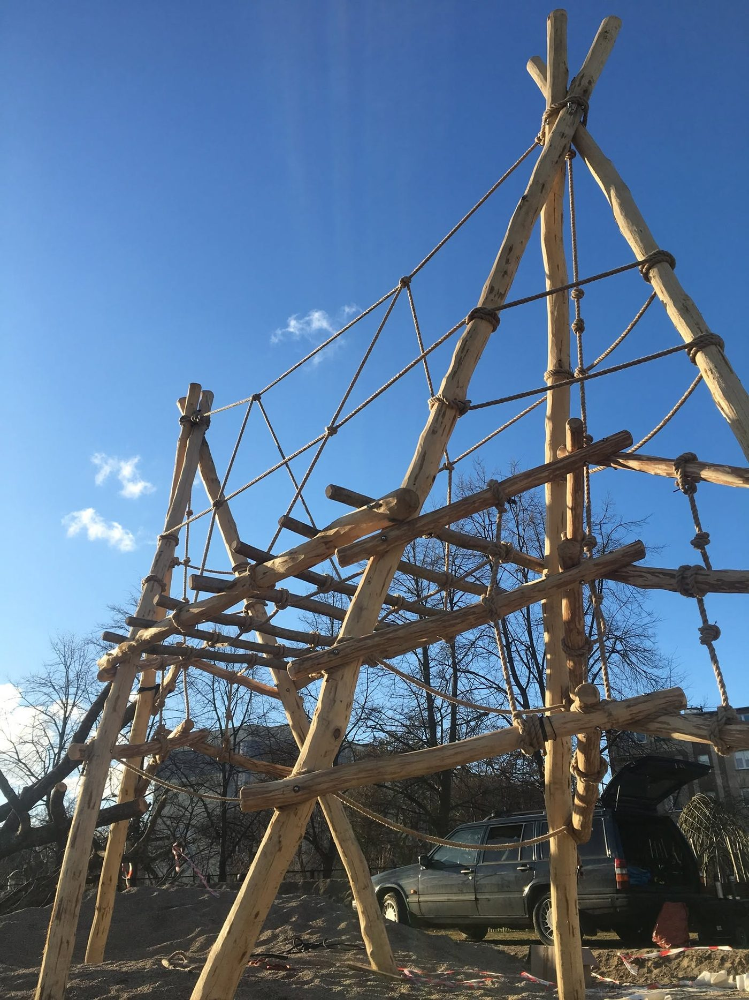
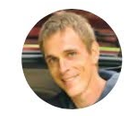
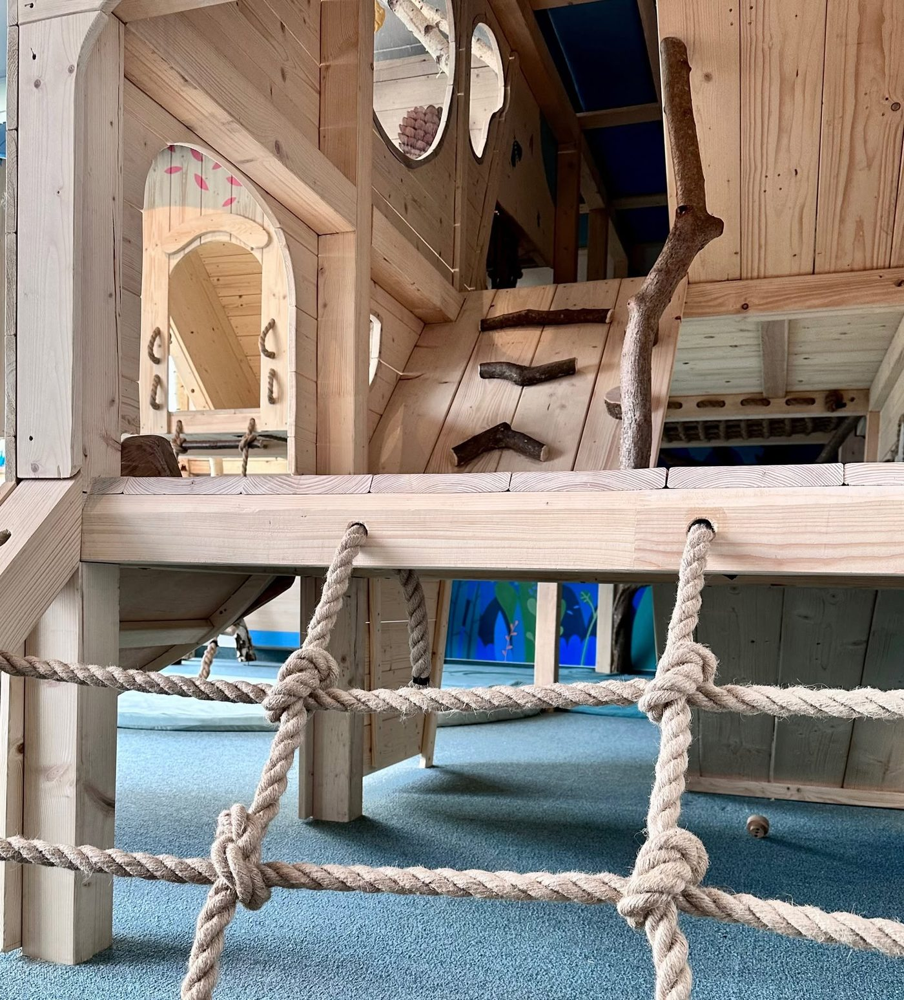
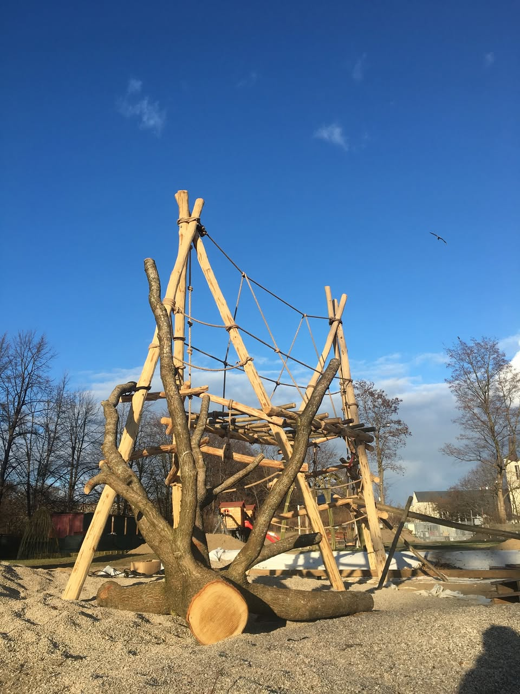
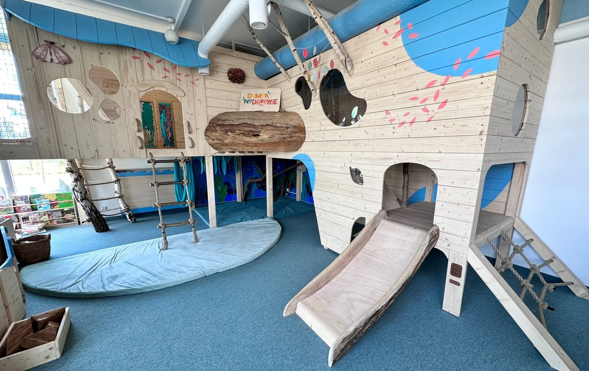
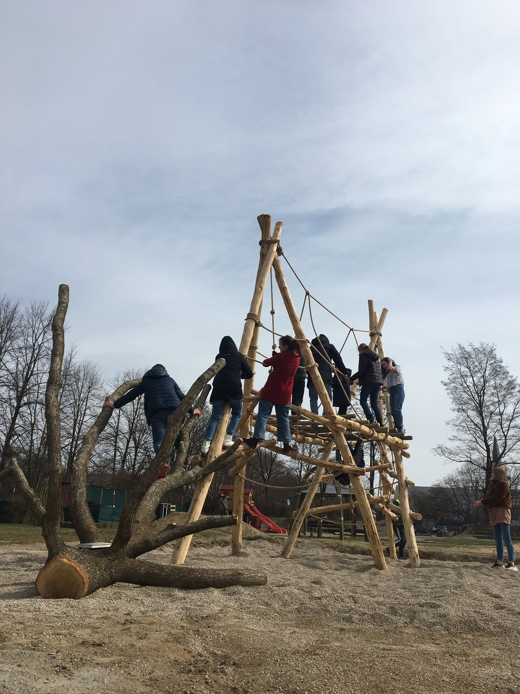
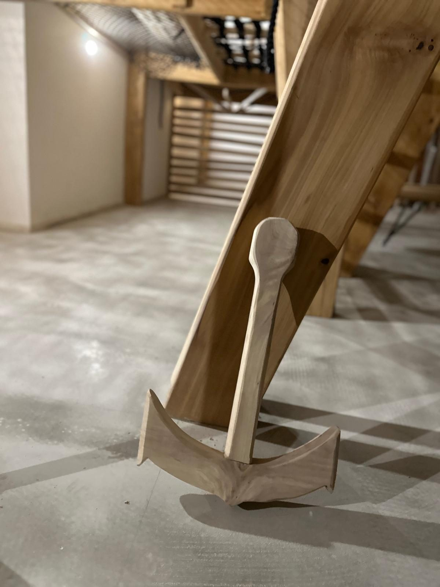
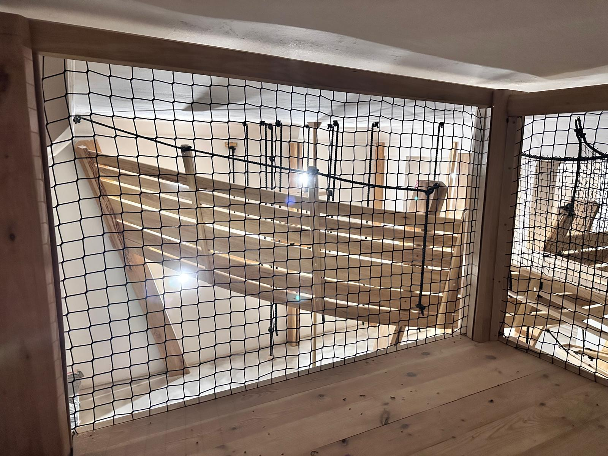

Tworzymy unikatowe miejsca, gdzie zabawa napędza procesy: profilaktyki chorób cywilizacyjnych, tworzenia i wzmacniania więzi społecznych oraz pełnego i wszechstronnego rozwoju potencjału dzieci i młodzieży. Łączymy rzemiosło z wiedzą terapeutyczną i pedagogiczną w niskoemisyjne, inspirujące formy.
Wrodzone potrzeby rozwojowe i poznawcze w formie spontanicznej zabawy są głównym motorem procesu profilaktycznego. Bez zachęty i namawiania realizują się w jej trakcie cele niewidoczne na pierwszy rzut oka:
W zakresie: cyberuzależnień, alkoholu i substancji toksycznych, otyłości/nadwagi, wad postawy ciała, działań antyspołecznych.
Tworzenie warunków sprzyjających integracji między- i wewnątrzpokoleniowej oraz treningu umiejętności prospołecznych.
W zakresie m.in.: samopoznania, praw fizyki, techniki i ekologii.

„To więcej niż zabawa - to przygotowanie do wyzwań nadchodzącego świata."
Marcin Banat, założyciel Strefy BalansuTworzenie ze skromnych zasobów wartościowych konstrukcji. Przeobrażanie „nieużytków" w unikatowe i pożyteczne miejsca. Każdy projekt dopasowany do konkretnego miejsca i inwestora, nie z katalogu.
Zobacz pełną ofertę i warunki terenowe→
W celu zapewnienia trwałości i odporności na zużycie oraz zminimalizowania skutków wandalizmu, stosownie do budżetu, używam najbardziej trwałych, selekcjonowanych materiałów. Gdy mam możliwość, unikam trudnych do utylizacji i wysokoemisyjnych tworzyw sztucznych i betonu.





Napisz kilka słów o miejscu, które macie na myśli. Odpowiemy i zaproponujemy termin konsultacji.